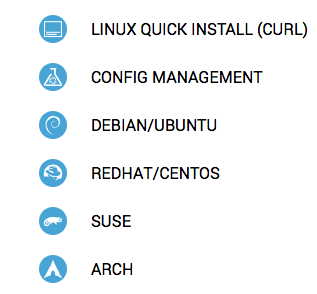

Installing Dataloop.IO Agents on Fedora 23
Dataloop.IO doesn't yet package their agent for Fedora, but it's easy enough to make it work.
I recently interviewed with a cool startup called Dataloop.IO. Their product
is a server monitor that can ingest data from many different sources. When I
interview with a company, I usually try to play with their product, if possible.
So I signed up for a trial account and got ready to install a Dataloop agent
on my home server, tk421.radel.us.
After verifying my email address, I was brought to a setup screen with instructions for installing agents on various operating systems:

I see several flavors of Linux, but Fedora is missing. That's awkward, because my server happens to be running Fedora 23. Well, I know Fedora 22+ is pretty close to CentOS 7, so I'm going to follow the CentOS instructions and hope for the best.
Step 1: Add the Dataloop yum repository
First, the folks at Dataloop instruct me to add their yum repository. Seems like this should work:
[dataloop] name=Dataloop Repository baseurl=https://download.dataloop.io/packages/stable/el$releasever/$basearch/ enabled=1 gpgcheck=0 sslverify=false
Step 2: Install the Dataloop Agent
Next up is obviously installing the agent package from the newly added repository. The instructions say to run:
[root@tk421 yum.repos.d]# yum install dataloop-agent
That's not quite right for Fedora, which replaced the Yum package manager with DNF in Fedora 22. The syntax is nearly identical:
[root@tk421 yum.repos.d]# dnf install dataloop-agent
Something isn't happy though:
Failed to synchronize cache for repo 'dataloop', disabling. Last metadata expiration check: 0:00:09 ago on Sun Nov 20 23:26:34 2016. No package dataloop-agent available. Error: Unable to find a match.
Well, that didn't seem to work, and the error message isn't very helpful either.
Maybe the DNF log file at /var/log/dnf.log will tell me more? Ah, here we go:
Nov 20 23:26:43 DEBUG repo: downloading from remote: dataloop, Handle: metalnk: None, mlist: None, urls ['https://download.dataloop.io/packages/stable/el23/x86_64/']. Nov 20 23:26:44 DEBUG Cannot download 'https://download.dataloop.io/packages/stable/el23/x86_64/': Cannot download repomd.xml: Cannot download repodata/repomd.xml: All mirrors were tried.
The problem is with the el$releasever variable in the repo file, which DNF replaces
with the release version number of the Linux distro. For CentOS 7, the release
version is 7, and for Fedora 23, it's 23. So DNF looks for a repository at
https://download.dataloop.io/packages/stable/el23/x86_64/, but then it gets a 404
error. Sure enough, a quick check of the server at download.dataloop.io
shows that they don't have a download directory for /el23/.
Let's try hardcoding the repo to use the CentOS packages in /el7
instead. Our new dataloop.repo file looks like this:
[dataloop] name=Dataloop Repository baseurl=https://download.dataloop.io/packages/stable/el7/$basearch/ enabled=1 gpgcheck=0 sslverify=false
Notice we've changed the base URL to use /el7/ instead of /el$releasever/. Now when I try that install command again, it works:
Last metadata expiration check: 0:10:14 ago on Sun Nov 20 23:26:34 2016. Dependencies resolved. ======================================================================================================================================================================= Package Arch Version Repository Size ======================================================================================================================================================================= Installing: dataloop-agent x86_64 1.3.11-1.el6 dataloop 41 M Transaction Summary ======================================================================================================================================================================= Install 1 Package Total download size: 41 M Installed size: 141 M Downloading Packages: dataloop-agent-1.3.11-1.el6.x86_64.rpm 5.9 MB/s | 41 MB 00:06 ----------------------------------------------------------------------------------------------------------------------------------------------------------------------- Total 5.9 MB/s | 41 MB 00:06 Running transaction check Transaction check succeeded. Running transaction test Transaction test succeeded. Running transaction Installing : dataloop-agent-1.3.11-1.el6.x86_64 1/1 Verifying : dataloop-agent-1.3.11-1.el6.x86_64 1/1 Installed: dataloop-agent.x86_64 1.3.11-1.el6 Complete!
Much better.
Step 3: Update the /etc/dataloop/agent.yaml file with your agent key
No changes needed here.
Steps 4 and 5: Starting the service
Finally, the instructions say to start the Agent service. The agent package
placed an init script in /etc/init.d/dataloop-agent for you. Fedora has
moved away from init scripts and is now using systemd. Although
init scripts are still supported for now, I'd prefer to follow the new standard.
Let's create a new systemd unit file for the Dataloop Agent in
/etc/systemd/system/dataloop-agent.service:
[Unit] Description=Dataloop.IO agent After=network.target [Service] Environment="YAML_CONFIG=/etc/dataloop/agent.yaml" EnvironmentFile=-/etc/sysconfig/dataloop-agent ExecStart=/usr/bin/dataloop-agent --config $YAML_CONFIG ExecStop=/usr/bin/dataloop-agent --config $YAML_CONFIG agent deregister User=dataloop [Install] WantedBy=multi-user.target
Since we changed systemd's unit files on disk, we need to tell it to reload the changes:
[root@tk421 system]# systemd daemon-reload
Now we can start the Dataloop Agent:
[root@tk421 system]# systemctl start dataloop-agent
Checking status of the agent
We can also use systemctl to make sure the agent is running:
[root@tk421 system]# systemctl status dataloop-agent
● dataloop-agent.service - Dataloop.IO agent
Loaded: loaded (/etc/systemd/system/dataloop-agent.service; disabled; vendor preset: disabled)
Active: active (running) since Mon 2016-11-21 00:20:07 EST; 11s ago
Main PID: 2389 (dataloop-agent)
Memory: 21.2M
CPU: 437ms
CGroup: /system.slice/dataloop-agent.service
└─2389 /opt/dataloop/embedded/bin/python /usr/bin/dataloop-agent --config /etc/dataloop/agent.yaml
Viewing the agent log file
The init script had the agent creating a log file in /var/log/dataloop/agent.log,
but systemd provides its own logging mechanism. We can view the agent logs with
the journalctl command:
[root@tk421 system]# journalctl -xe -t dataloop-agent
Setting the agent to run on reboot
Finally, we should tell systemd to start the agent on every boot:
[root@tk421 system]# systemctl enable dataloop-agent.service Synchronizing state of dataloop-agent.service with SysV init with /usr/lib/systemd/systemd-sysv-install... Executing /usr/lib/systemd/systemd-sysv-install enable dataloop-agent Created symlink from /etc/systemd/system/multi-user.target.wants/dataloop-agent.service to /etc/systemd/system/dataloop-agent.service.
Cleaning up
If you want, you can now remove that init script, since it's no longer needed:
[root@tk421 system]# rm -f /etc/init.d/dataloop-agent [root@tk421 system]# rm -f /var/log/dataloop [root@tk421 system]# rm -f /var/run/dataloop-agent.pid [root@tk421 system]# rm -f /var/lock/subsys/dataloop-agent
(Note: don't worry if the files in /var don't exist. They would only exist if you ever used the init script to start the agent.)
Success!
That's it! Dataloop Agent is now installed and running in true Fedora fashion.
Comments
Comments powered by Disqus